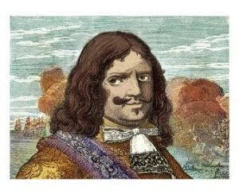

<div class="content">
<div class="scroller">
<h2>Удача</h2>
<br/>
<p style="font-size: 1rem; "> Функция удачи реализуется через
                  настройку на удачливого человека! </p>
<p> Пират Генри Морган-невероятно удачливый человек. После
                  многочисленных пиратских деяний оказывал услуги королевскому
                  двору Англии. Выпущенный под честное слово на свободу, </p>
<p> Морган провёл три года в английской столице, где стал
                  местной достопримечательностью и пользовался огромным успехом
                  у женщин. После инсценировки судебного процесса было вынесено
                  решение: «Виновность не доказана». Морган был отправлен
                  обратно на Ямайку на должность вице-губернатора. </p>
<p style="font-size: 1rem; "> Настраиваемся на состояние
                  удачливости Моргана, делаем мандалу и связываем полученное
                  состояние с синей чакрой скарабея. </p>
<div class="violet" style="color:white">Запрограммировать
                  управляющего иффрита на выполнение функции удачи, привязав к
                  цвету кнопки панели управления(соответсвует цвету фона
                  настоящей надписи)</div>
</div>
</div>

